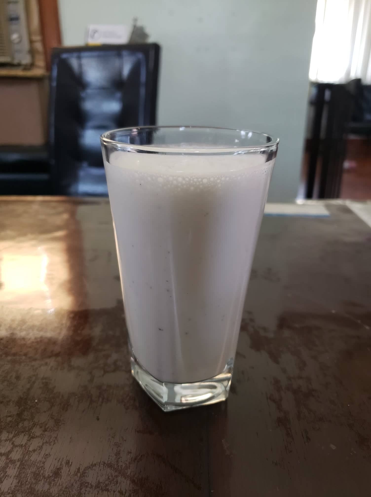

Sweet Lassi

Ingredients:
- 1 cup Plain yogurt
- 1/2 cup Milk, and/or Ice
- 1 - 2 Tbsp Sugar
- 1/8 tsp Cardamom
- Optional: 1/2 tsp Rose water
- Optional: 1/16 tsp Saffron
Instructions:
- If using saffron, mix it with 1-2 tablespoons of hot milk while preparing the other ingredients.
- Blend all the ingredients together. Either blend in the saffron or use as a garnish.